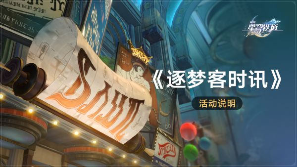
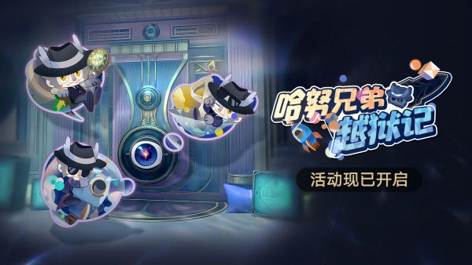
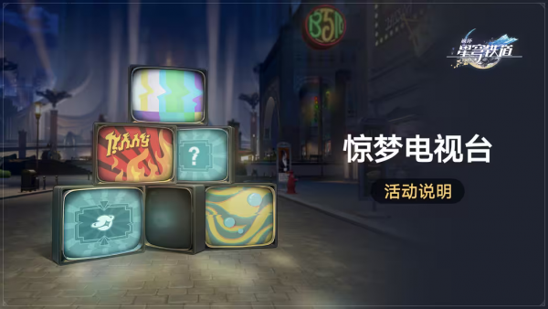
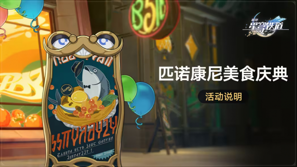
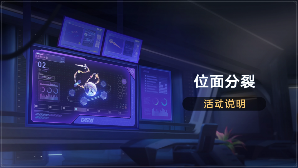
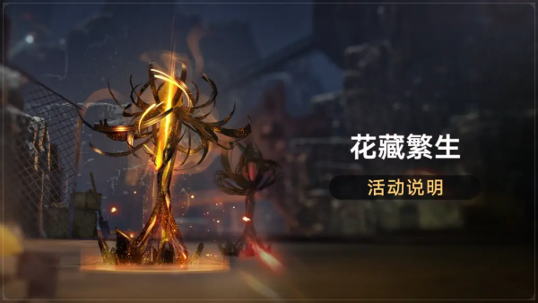
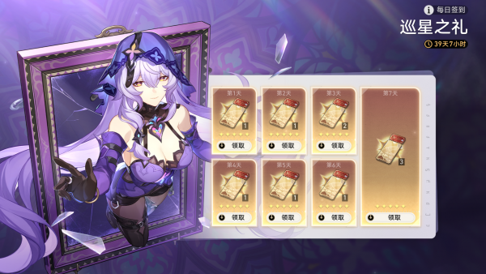

探索活动「《逐梦客时讯》」2.0版本 （常规）

2.0版本更新后~2024/03/25 03:59
完成开拓任务「仙舟『罗浮』」-「安灵布奠，天清路远」
- 活动开放期间，开拓者可在页面中查看所有时讯内容。
- 在匹诺康尼完成指定时讯后，即可于相应页面中领取奖励。
- 活动开放期间，每条时讯完成后，其奖励仅可领取一次。
| 挑战名称 |
挑战要求 |
奖励 |
| 时讯速递 |
在梦境中击败3名「惊梦剧团的圆幕先生」 |
30星琼40000信用点 |
|
在梦境中击败3名「惊梦剧团的气泡锂犬」 |
30星琼4漫游指南 |
|
在梦境中击败3名忆域迷因「我心支离破碎」 |
30星琼3星火之精 |
|
在梦境中击败1名宝箱守卫者「惊梦剧团的十七分熟」 |
4遗失晶块40000信用点 |
|
在梦境中击败1名宝箱守卫者「惊梦剧团的甜猿泰山」 |
3星火之精40000信用点 |
| 社会生态 |
在「黄金的时刻」击碎3个可破坏物 |
30星琼40000信用点 |
|
在「筑梦边境」击碎3个可破坏物 |
30星琼4漫游指南 |
|
在「稚子的梦」击碎3个可破坏物 |
30星琼3星火之精 |
|
在「『白日梦』酒店-梦境」击碎3个可破坏物 |
30星琼3星火之精 |
| 八卦怪谈 |
在匹诺康尼开启15个「战利品」 |
90星琼40000信用点4遗失晶块3星火之精 |
|
在梦境中发现10个「折纸小鸟」 |
90星琼40000信用点4漫游指南3星火之精 |
| 招工启事 |
在筑梦边境完成1次「回忆之蕾 • 拟造花萼（金）」 |
20星琼40000信用点 |
|
在稚子的梦完成1次「以太之蕾 • 拟造花萼（金）」 |
20星琼4漫游指南 |
|
在筑梦边境完成1次「焦炙之形•凝滞虚影」 |
20星琼3星火之精 |
|
在「白日梦」酒店-梦境完成1次「同谐之蕾 • 拟造花萼（赤）」 |
20星琼4遗失晶块 |
|
在「白日梦」酒店-梦境完成1次「梦潜之径•侵蚀隧洞」 |
30星琼1燃料 |
版本/常驻活动 「哈努兄弟越狱记」（常规）

2024/02/08 12:00~2024/03/25 03:59
- 气泡弹珠
| 难度 |
奖励 |
| 浅层「气泡弹珠」难度I |
10星琼2漫游指南10000信用点 |
| 浅层「气泡弹珠」难度II |
10星琼2漫游指南10000信用点 |
| 深层「气泡弹珠」难度I |
10星琼5凝缩以太10000信用点 |
| 深层「气泡弹珠」难度II |
10星琼5遗失碎金10000信用点 |
| 深层「气泡弹珠」难度III |
10星琼2漫游指南10000信用点 |
| 深层「气泡弹珠」难度IV |
10星琼5凝缩以太10000信用点 |
| 深层「气泡弹珠」难度V |
10星琼5遗失碎金10000信用点 |
- 梦境迷钟
| 难度 |
奖励 |
| 浅层「梦境迷钟」难度I |
10星琼2漫游指南10000信用点 |
| 浅层「梦境迷钟」难度II |
10星琼2漫游指南10000信用点 |
| 深层「梦境迷钟」难度I |
10星琼5凝缩以太10000信用点 |
| 深层「梦境迷钟」难度II |
10星琼5遗失碎金10000信用点 |
| 深层「梦境迷钟」难度III |
10星琼2漫游指南10000信用点 |
| 深层「梦境迷钟」难度IV |
10星琼5凝缩以太10000信用点 |
| 深层「梦境迷钟」难度V |
10星琼5遗失碎金10000信用点 |
- 小小哈努行动
| 难度 |
奖励 |
| 浅层「小小哈努行动」难度I |
10星琼2漫游指南10000信用点 |
| 浅层「小小哈努行动」难度II |
10星琼2漫游指南10000信用点 |
| 深层「小小哈努行动」难度I |
10星琼5凝缩以太10000信用点 |
| 深层「小小哈努行动」难度II |
10星琼5遗失碎金10000信用点 |
- 梦客漫步
| 难度 |
奖励 |
| 浅层「梦客漫步」难度I |
10星琼2漫游指南10000信用点 |
| 浅层「梦客漫步」难度II |
10星琼2漫游指南10000信用点 |
| 深层「梦客漫步」难度I |
10星琼5凝缩以太10000信用点 |
| 深层「梦客漫步」难度II |
10星琼5遗失碎金10000信用点 |
- 气泡弹珠
| 完成关卡数 |
奖励 |
| 在浅层「气泡弹珠」中完成1个关卡 |
40星琼10星火之精60000信用点 |
| 在浅层「气泡弹珠」中完成2个关卡 |
40星琼5提纯以太6遗失晶块 |
| 在深层「气泡弹珠」中完成1个关卡 |
30星琼6漫游指南 |
| 在深层「气泡弹珠」中完成2个关卡 |
30星琼60000信用点 |
| 在深层「气泡弹珠」中完成3个关卡 |
30星琼6遗失晶块 |
| 在深层「气泡弹珠」中完成4个关卡 |
30星琼6漫游指南 |
| 在深层「气泡弹珠」中完成5个关卡 |
30星琼60000信用点 |
- 梦境迷钟
| 完成关卡数 |
奖励 |
| 在浅层「梦境迷钟」中完成1个关卡 |
40星琼10星火之精60000信用点 |
| 在浅层「梦境迷钟」中完成2个关卡 |
40星琼6漫游指南5提纯以太 |
| 在深层「梦境迷钟」中完成1个关卡 |
30星琼6遗失晶块 |
| 在深层「梦境迷钟」中完成2个关卡 |
30星琼60000信用点 |
| 在深层「梦境迷钟」中完成3个关卡 |
30星琼6漫游指南 |
| 在深层「梦境迷钟」中完成4个关卡 |
30星琼60000信用点 |
| 在深层「梦境迷钟」中完成5个关卡 |
30星琼6遗失晶块 |
- 小小哈努行动
| 完成关卡数 |
奖励 |
| 在浅层「小小哈努行动」中完成1个关卡 |
40星琼10星火之精60000信用点 |
| 在浅层「小小哈努行动」中完成2个关卡 |
40星琼6漫游指南6遗失晶块 |
| 在深层「小小哈努行动」中完成1个关卡 |
30星琼60000信用点 |
| 在深层「小小哈努行动」中完成2个关卡 |
30星琼5提纯以太 |
- 梦客漫步
| 完成关卡数 |
奖励 |
| 在浅层「梦客漫步」中完成1个关卡 |
40星琼10星火之精60000信用点 |
| 在浅层「梦客漫步」中完成2个关卡 |
1命运的足迹100星琼 |
| 在深层「梦客漫步」中完成1个关卡 |
30星琼6漫游指南 |
| 在深层「梦客漫步」中完成2个关卡 |
30星琼6遗失晶块 |
- 梦泡鉴赏家
挑战活动「惊梦电视台」（常规）

2024/02/29 12:00~2024/03/25 03:59
| 奖励名称 |
触发机制 |
奖励条件 |
| 与银袋山同行 |
触发【弱点击破】机制，将关卡增益提升至4档 |
50星琼3漫游指南50000信用点
在「终极挑战」阶段，积分达到40000：50星琼3漫游指南3提纯以太
在「终极挑战」阶段，积分达到60000：20遗器残骸4遗失晶块
在「终极挑战」阶段，积分达到80000：10遗器残骸20000信用点
|
| 匹诺康尼偶像 |
触发【微笑三消】机制，将关卡增益提升至12档 |
50星琼3漫游指南50000信用点
在「终极挑战」阶段，积分达到40000：50星琼3漫游指南3提纯以太
在「终极挑战」阶段，积分达到60000：20遗器残骸4遗失晶块
在「终极挑战」阶段，积分达到80000：10遗器残骸20000信用点
|
| 地狱厨房 |
触发【叠层引爆】机制，将关卡增益提升至5档 |
50星琼3漫游指南50000信用点
在「终极挑战」阶段，积分达到40000：50星琼3漫游指南3提纯以太
在「终极挑战」阶段，积分达到60000：20遗器残骸4遗失晶块
在「终极挑战」阶段，积分达到80000：10遗器残骸20000信用点
|
| 与猩共舞 |
触发【反震还击】机制，将关卡增益提升至20档 |
50星琼3漫游指南50000信用点
在「终极挑战」阶段，积分达到40000：50星琼3漫游指南3提纯以太
在「终极挑战」阶段，积分达到60000：20遗器残骸4遗失晶块
在「终极挑战」阶段，积分达到80000：10遗器残骸20000信用点
|
| 情绪黑洞 |
在当前关卡中，积分达到30000 |
50星琼3漫游指南50000信用点
在当前关卡中，积分达到40000：50星琼3漫游指南3提纯以太
在当前关卡中，积分达到60000：20遗器残骸4遗失晶块
在当前关卡中，积分达到80000：10遗器残骸20000信用点
|
| 完成条件 |
奖励 |
| 完成全部关卡，且积分均达到40000 |
1命运的足迹 |
| 完成条件 |
奖励 |
| 在「惊梦电视台」活动中，完成全部关卡，且关卡积分均达到40000分 |
1400无名客的经验 |
剧情活动「匹诺康尼美食庆典」（常规）

2024/03/06 12:00~2024/03/18 03:59
匹诺康尼商业区正在开展「年度美食庆典」：只要提交指定材料，就可以获得实体化梦境美食，并向匹诺康尼外的伙伴赠送梦境特产餐品！
活动开启后，杰伊将每日公开新的1种「梦境美食」及完成美食所需的「餐品食材」，美食共计7种。
开拓者收集当日美食所需的「餐品食材]并提交后，可获得今日美食与奖励。
| 菜品名称 |
所需材料 |
奖励回馈 |
| 「交叠的美梦」 |
2锈迹齿轮 2冰之芯 |
70星琼3漫游指南 1百层圣代（零卡） 40000信用点 |
| 「酸梦难得夹心糖」 |
1老旧臼齿 1虚粒子 |
70星琼3漫游指南 1「酸梦」牌软糖 40000信用点 |
| 「仰望星空千层蛋糕」 |
2锈迹齿轮 2基本食材 |
70星琼3漫游指南 1切片蛋糕「仰望星空」 40000信用点 |
| 「酣梦畅饮苏乐达」 |
1老旧臼齿 2固态净水 |
70星琼3漫游指南 1经典苏乐达 40000信用点 |
| 「向你致敬，朋友！」 |
1散热凝胶 2基本食材 |
70星琼3漫游指南 1「鲱鱼先生」柠檬挞 40000信用点 |
| 「独享装钟表披萨」 |
2安逸 2燃素 |
70星琼3漫游指南 1钟表披萨（单片） 40000信用点 |
| 「多味什锦彩梦糖」 |
2碎梦 1虚粒子 |
80星琼3漫游指南 1「彩梦」什锦糖果 40000信用点 |
资源活动「位面分裂」第七期（特殊）

活动时间:
2024/01/10 04:00~2024/01/17 03:59
开启「模拟宇宙•第三世界」
- 在「位面分裂」活动期间，挑战「模拟宇宙」时，可从沉浸装置中获得双倍奖励。
- 活动期间，双倍奖励的次数有限，剩余次数和次数上限可在「位面分裂」活动界面中查看。
- 双倍奖励次数在活动期间不会重置，请开拓者合理安排时间挑战。
挑战「模拟宇宙」获得位面饰品时，将会自动消耗活动次数获得双倍奖励。（活动期间共12次）
「花藏繁生」-第三期

2024/03/16 04:00~2023/03/23 03:59
在「花藏繁生」活动期间，挑战并完成「拟造花萼（金）」或「拟造花萼（赤）」时，可获得双倍奖励。
登陆活动「逴星之礼」
2.0版本更新后~2.0版本结束
活动期间登录游戏，开拓者即可在「旅情事记」中领取奖励：星轨专票*10。
星轨专票*10
签到活动「巡星之礼」第七期

2.0版本更新后~2024/03/26 03:59
解锁「旅情事记」。
每日登录游戏，可在「旅情事记」中领取当日奖励，奖励将根据开拓者累计登录天数依次解锁。
活动期间，完成7日签到累计可领取星轨专票*10！
| 第几天 |
奖励 |
| 第1天 |
星轨专票 × 1 |
| 第2天 |
星轨专票 × 1 |
| 第3天 |
星轨专票 × 2 |
| 第4天 |
星轨专票 × 1 |
| 第5天 |
星轨专票 × 1 |
| 第6天 |
星轨专票 × 1 |
| 第7天 |
星轨专票 × 3 |
登陆活动「千万别点开！！」（额外）
2024/02/29 12:00~2024/03/27 06:00
2024/03/27 06:00 (UTC+8) 前开拓等级≥4级
2024/03/27 06:00 前，开拓等级≥4级即可打开邮箱领取燃料*10和花火妙妙包。邮件的有效期为30天。
※开拓者点击【领取】邮件后，「花火妙妙包」将随机赠予特定道具。
10燃料，花火妙妙包